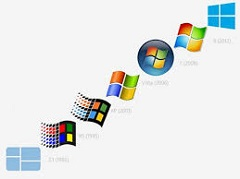
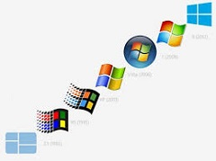

NUESTROS TRABAJOS
REINSTALACIONES DE WINDOWS FORMATEOS.
INSTALACION DE WINDOWS Y OFFICE.
INSTALACION Y ACTUALIZACION DE ANTIVIRUS.
ELIMINACION DE VIRUS, TROYANOS Y SPYWARE.
ACTUALIZACION E INTALACION DE DRIVERS.
CONFIGURACION,MANTENIMIENTO Y ACTUALIZACIONES DE SOFWARE.
SOPORTE DE RED (COMPARTIR CARPETAS, ARCHIVOS E IMPRESORAS).
BACKUP DE DATOS
INSTALACION DE PLACAS DE VIDEO, PERISFERICOS Y DISPOSITIVOS.
REPARACION DE FALLAS ELECTRONICAS.
LIMPIEZA Y MANTENIMIENTO.
CAMBIO DE PASTA TERMICA.
ARMADO DE PC
PRESUPUESTO SIN CARGO
RETIRO A DOMICILIO
DESBLOQUEO DE NETBOOK, REPROGRAMACION DE BIOS
¿ Que es el hadware ?
Se trata de componentes eléctricos, electrónicos, electromecánicos y mecánicos que facilitan el funcionamiento del ordenador, desde la pantalla, el teclado y el ratón hasta los componentes internos como el disco duro o la placa base
¿Qué es el software ?
Se llama así a todos los programas adicionales que se incorporan al computador, dotado ya de un sistema operativo, con el propósito de llevar a cabo un sinfín de tareas posibles: desde procesadores de texto, hojas de cálculo, navegadores de internet, aplicaciones de diseño o videojuegos.
Tu PC que no enciende
Cuando tu PC no se enciende, puede ser aterrador.
La causa puede ser tan simplemente
como un cable suelto o tan complejo como un problema de hardware.
Un tecnico puede diagnosticar la causa y brindarte una solucion rapida.
 
